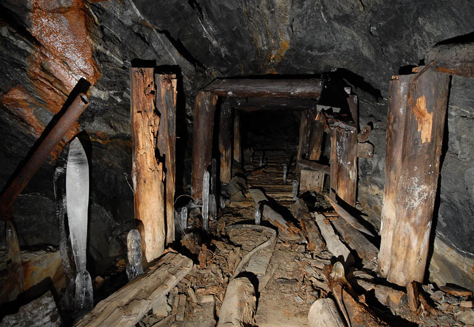
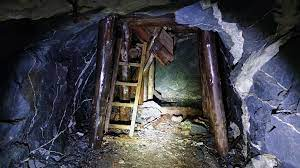
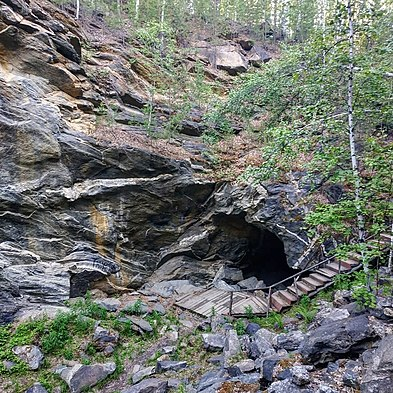
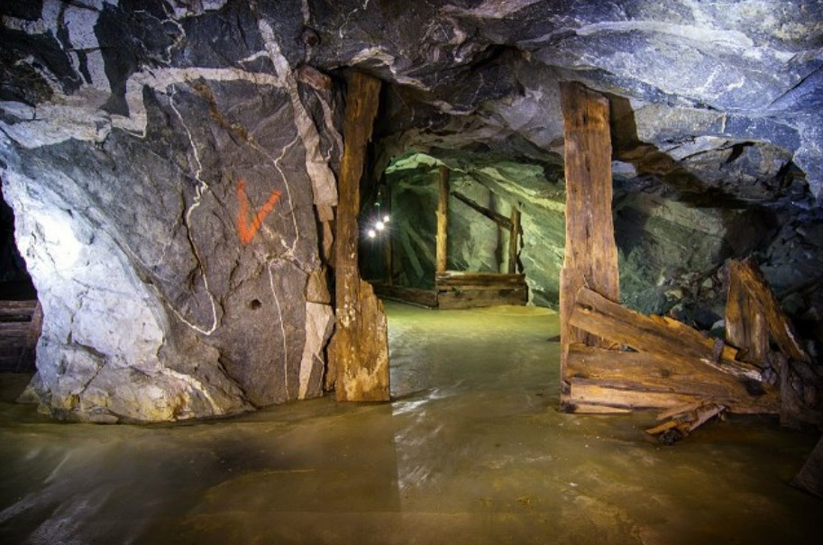

О поселке Слюдорудник и его истории
Месторождение слюды открыли еще в начале ХХ века.
В поселке Слюдорудник был комбинат по добыче этого полезного ископаемого.
Слюда шла в оборонную промышленность, радиоэлектронику.
- В XIX веке в этих местах работали золотые прииски
- В 1870-е годы здесь нашли слюду
- В начале 1930-х годов началась промышленная добыча слюды
- В 1932 году возник жилой поселок при руднике – Слюдорудник
- В 1937-1943 годах были заложены штольни, началась добыча подземным способом
- В 1961 году месторождение законсервировали
Поселок Слюдорудник близ города Кыштым Челябинской области славится своими заброшенными шахтами, ходить по подземным лабиринтам которых можно часами.
Фото заброшенных штолен
- 
- 
- 
- 
Дополнительный материал из Википедии